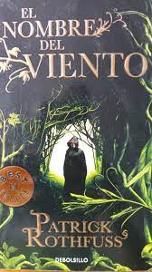
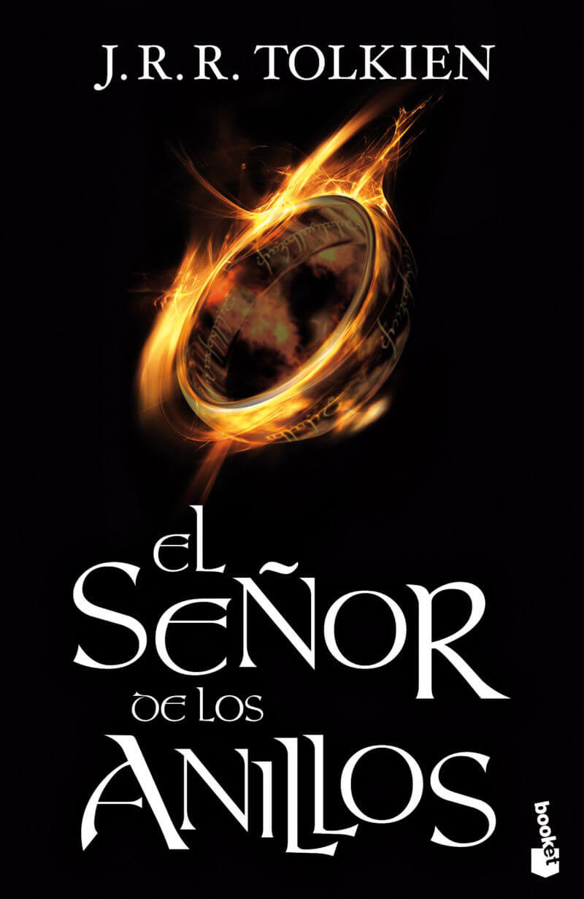
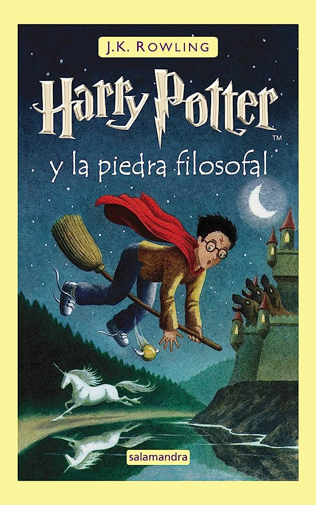

| PORTADA |
TITULO |
AUTOR |
SINOPSIS |
ENLACE DE DESCARGA |
|  |
El nombre del viento |
Patrick Rothfuss |
Esta novela sigue la vida de Kvothe, un músico y mago legendario, mientras relata su propia historia en una posada. "El nombre del viento" es una mezcla de aventura, magia, romance y misterio, que sumerge al lector en un mundo vibrante lleno de personajes fascinantes y un sistema de magia único. |
LEER |
|  |
El Señor de los Anillos |
J.R.R. Tolkien |
Ambientada en la Tierra Media, esta trilogía épica sigue la lucha entre el bien y el mal mientras Frodo Baggins y su compañía se embarcan en una peligrosa misión para destruir el Anillo Único. Tolkien crea un mundo detallado y complejo, lleno de razas fantásticas, criaturas míticas y una narrativa cautivadora. |
LEER |
|  |
Harry Potter y la piedra filosofal |
J.K. Rowling |
El primer libro de la serie "Harry Potter" introduce al joven mago Harry Potter y lo lleva a la Escuela de Magia y Hechicería de Hogwarts. Con una mezcla de magia, amistad y aventuras, Rowling construye un mundo mágico lleno de personajes entrañables y una trama llena de giros emocionantes. |
LEER |
 |
American Gods |
Neil Gaiman |
En esta novela, Gaiman mezcla la fantasía y la mitología con la realidad moderna. Shadow, el protagonista, se ve inmerso en una guerra entre los dioses antiguos y los nuevos dioses de la tecnología y los medios de comunicación. "American Gods" es una exploración de la fe, la identidad y los mitos en la sociedad contemporánea. |
LEER |
 |
El último deseo |
Andrzej Sapkowski |
El primer libro de la serie "The Witcher" sigue las aventuras del brujo Geralt de Rivia en un mundo lleno de monstruos, magia y política. Sapkowski combina elementos de la fantasía tradicional con un tono oscuro y una narrativa llena de acción, creando una historia envolvente y repleta de personajes complejos. |
LEER |